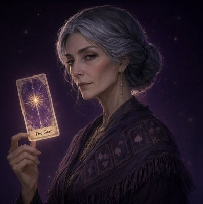

Прошлое
Двойка Кубков · прямая
Выбор сердца, союз, притяжение. Работа «посадила» тебя за красивый партнёрский стол — отсюда и привязанность. Тень: выбор из страха всё потерять.
 Урания · Астролог
Урания · Астролог
Личный прогноз на выбранную дату по твоей натальной карте.
Сегодня. Можно выбрать любой день — прогноз не влияет на историю чата.
Данные профиля (дата, время, город рождения) подставлены — проверить: 05.03.1994, 14:20, Москва. Изменить данные — не прятать подстройку профиля в мастер запуска (§5.2).
Урания · Астролог
Совместимость по датам рождения: где вы усиливаете друг друга, а где трение.
Слой «сбой» показан в SPEC §4 — переключается пробой ?fail=1 (в проде — состояние операции §5.3: сверка статуса до повторного списания).
Главное: сильное взаимное притяжение и общее чувство юмора (Луна–Венера в огне), но разные ритмы жизни: тебе нужен план, ему — воздух. Трение концентрируется в быту и теме «кто когда говорит».
Основной визуал — схема сфер; на mobile увеличивается по нажатию (R14 поставит настоящую схему).
Сохранено в библиотеку — повторное открытие без нового списания.

Мадам ЛенорманШаг «вопрос» открыт из инструмента «Расклад» в каталоге; расклад и колода выбраны — вернуться и поменять можно в любой момент до вытягивания карт.
Примеры — редактируемые подстановщики:
Строки выбора открывают список раскладов (§6.2: все активные, без ограничения тремя) и колоды — отдельные состояния в SPEC §3.
Расклад включён в тариф. Отдельно оплачивается только личный смысл (разбор), условия покажем перед ним.
«Мой вопрос к картам: Стоит ли менять работу осенью?» — сообщение пользователя в ленте чата.
Колода собирает твой расклад…
Карты выдаёт сервер целиком (reading_id). Выбор конкретной карты из 78 не изображаем — этого нет в контракте (§6.3).
Большой расклад (Кельтский крест — 10, Колесо года — 12): те же карты, но сеткой по позициям с увеличением отдельной карты; обязательного сложного жеста нет (§6, mobile). Отдельный кадр — SPEC §3.
Раскрытая карта — нажатие открывает увеличенный просмотр (§6.5), повторное нажатие не меняет карту. Раскрытие по порядку; «Показать сразу» раскрывает тот же серверный набор.
Двойка Кубков
Позиция: Прошлое · прямая
Сцена за этим экраном сохраняет раскрытые карты и счётчик — возврат без потери состояния (§6.5). Порядок карт не перетасовывается при ресайзе/возврате из оплаты.
Мой вопрос к картам: «Стоит ли менять работу осенью?» · reading_id A-4173 · колода: Классическое Таро
Двойка Кубков · прямая
Выбор сердца, союз, притяжение. Работа «посадила» тебя за красивый партнёрский стол — отсюда и привязанность. Тень: выбор из страха всё потерять.
Тройка Жезлов · прямая
Корабли уже в море: первые планы дали всходы, время расширять горизонт, а не пересчитывать старые грузы. Ожидание — тоже ход.
Солнце · прямая
Свет, ясность, работа на виду. Осенний переход обещает быть удачным, если решение будет твоим, а не ответом на чужой шум. Тень: мечтательность без действия.
Расклад сохранён: повторное открытие — без нового draw и списания (§6, TAROT_REPLAY_CONTRACT).